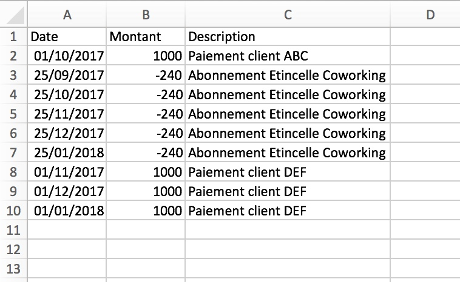

Exporter
Aide
Fichier
[
0
,
0
]
sur la période
au
Importation réussie
Solde bancaire initial à la date du fichier
Autorisation de découvert
Date du solde bancaire
Exporter la simulation
Vous avez effectué
déplacements
Impossible de lire le fichier
Le fichier doit être au format csv (séparateur 'point virgule'), xls ou xlsx). Il doit contenir trois colonnes:
